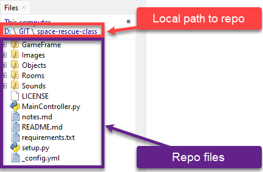
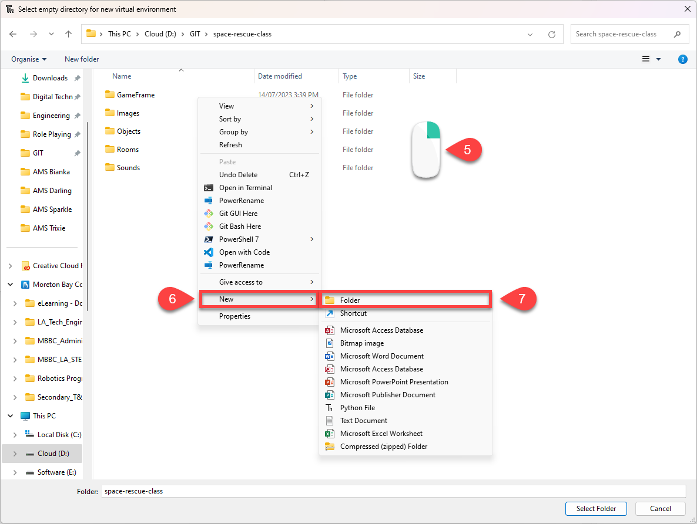
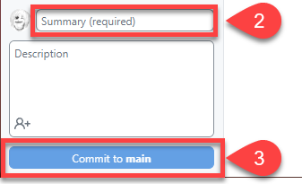

Using Thonny as the IDE#
Thonny as an alteravtive IDE
This page will finish the setup of your environment, but using Thonny as the IDE rather than VS Code. Before you follow these instructions, you should have completed the instructions in the Setup page, up to and including GitHub Desktop.
Thonny is a Python IDE for beginners. It comes packaged with Python, which helps with the setup. Despite being targeted at begginers, it has many of the feature of professional IDEs
Install and setup Thonny#
Download Thonny from thonny.org and install it.
Then open the View menu and tick
Files
Shell

GameFrame and resources#
GameFrame
GameFrame was developed by a Steven Tucker, a Queensland teacher. If you wish to use the latest versions of GameFrame, it can be found at his Gitlab repository.
We will be using a repo with an edited version of GameFrame, which includes all the assets needed for these tutorials. We will clone (copy) the repo from GitHub.
To do this:
Go to the Space Rescue Resources repo
Click on the green Code button
Click on the copy button beside the https url

Open GitHub Desktop
Open the File menu
Click Clone Repository

Choose the URL tab
Paste repo URL into URL or username/repository box
Remember the Local path that your repo will be saved in (write it down somewhere)
Click Clone
The repo should now be copied onto your computer and ready for use.
Navigating to repo in Thonny#
We now have to direct Thonny to the repo we just created.
Go back to Thonny
In the Files panel click on This computer

Click through the drives and directories until you have recreated the Local path where you saved your repo.
Make sure that the file in your repo folder directories match those in the image below.

Virtual Environment#
Python virtual environments enables you to designate distinct areas for various Python projects. It’s like having various rooms in your home, each with its unique furnishings and accents. You can work on various projects in a virtual environment without their interfering with one another. Each project gets a special “playground” with its own Python installation and particular libraries. A virtual environment is similar to walking into a specific room, and any Python programmes or libraries you use are exclusive to that project once you enter it. You can easily work on numerous Python projects because everything is kept organised and conflicts between projects are avoided.
Creating a virtual environment in Thonny#
Must be in the repo directory
Thonny will create the virtual environment in the current directory, therefore it is essential that the Files panel is showing your repo directory.
Go to the Tools menu and choose Options…

In the Thonny options dialogue box click the Interpreter tab
Then click on New virtual environment

Click OK on the Creating new virtual environment message.
In the File dialogue box, right mouse click in the white space.
Then choose New from the context menu
Then Folder

Name the new folder venv
Make sure that it is highlighted and then click Select

Wait for Creating virtual environment message to close

Check that the Python executable is pointing at your repo directory.
Click OK
![Thonny checking venv]
Checking your virtual environment in Thonny#
Each time you open Thonny it is important to ensure that your virtual environment is active. To do this look at the Python version in the Shell frame, it should point to the venv folder you just made.
If it is not pointing to the venv folder, you need to activate your virtual environment by:
Right mouse click on the venv folder in the Files panel
Select Activate virtual environment

Then recheck your Shell panel
Make first commit and push#
Git and GitHub terminology
Git and GitHub uses a range of different terminology. Here are some of the terms we will be using:
Repository or repo: A repository is a special folder that stores all the files and their history for a project.
Commit: When you make changes to files in a repository, a commit is takes a snapshot of those changes. Each commit has a unique name and a message explaining what changes were made.
Pull: Pulling means getting the latest changes made by others and adding them to your own copy of the project.
Push: Pushing is when you share your changes with others by sending them to a central place, like a website or server.
Remote: A remote is a way to connect your local copy of the project with the online version. weare using GitHub. It allows you to share your work and collaborate with others.
Clone: Cloning is making a copy of a project from a remote location to your own computer so you can work on it.
Local: the copy of the repo that is on your computer
Origin: the copy of the repo that is on a remote location
Fork: making your own copy of someone else’s project.
Note: the other that you could be working with might be you on another computer.
Change the text in README.md to the text below and then save it:
# SPACE RESCUE
Try to save the helpless astronauts who are being left stranded in space by the evil Zork.
In GitHub desktop write “Made first change” in the Summary (required) box
Then click Commit to main

Click Push origin (you will receive an error)

Choose to Fork this repository
Choose For my own purposes and Continue
Click Push origin again